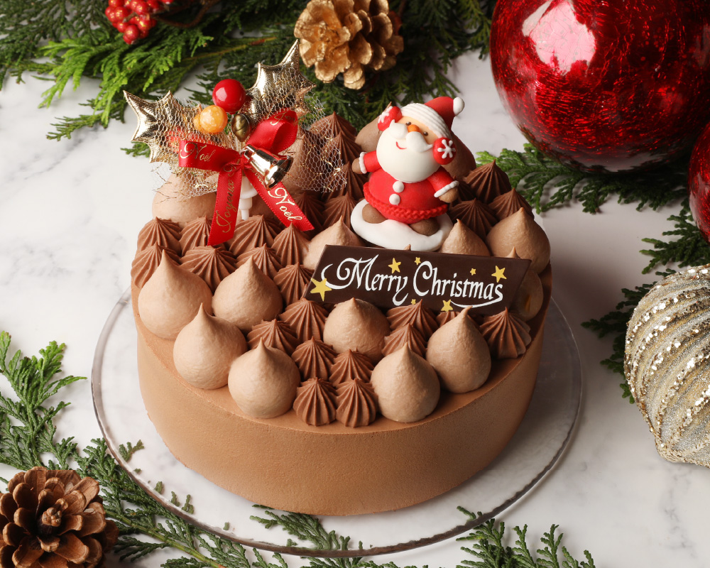
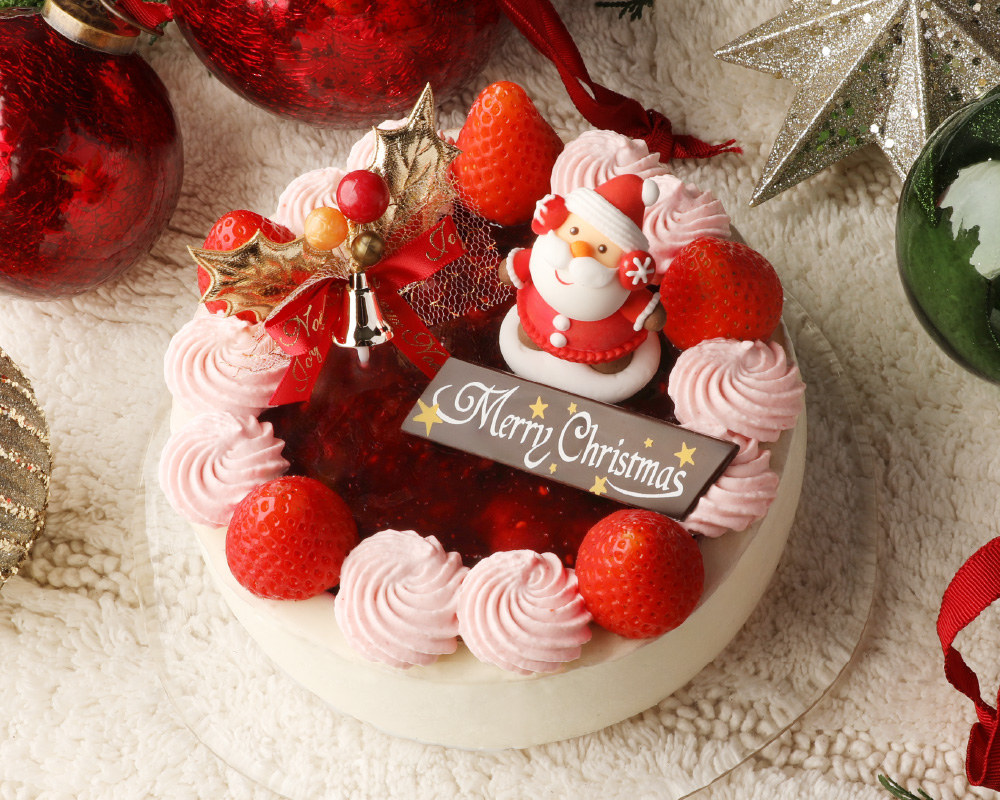
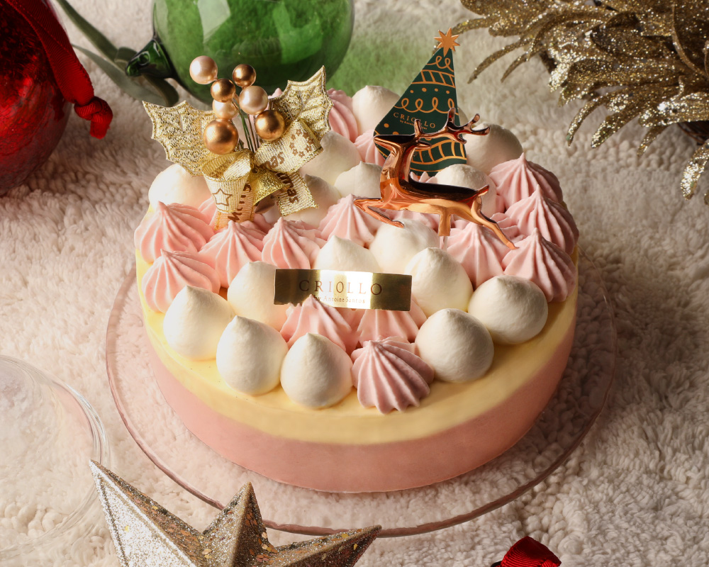
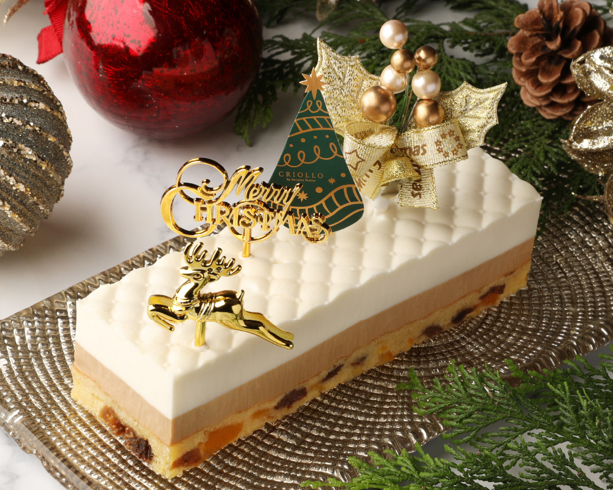
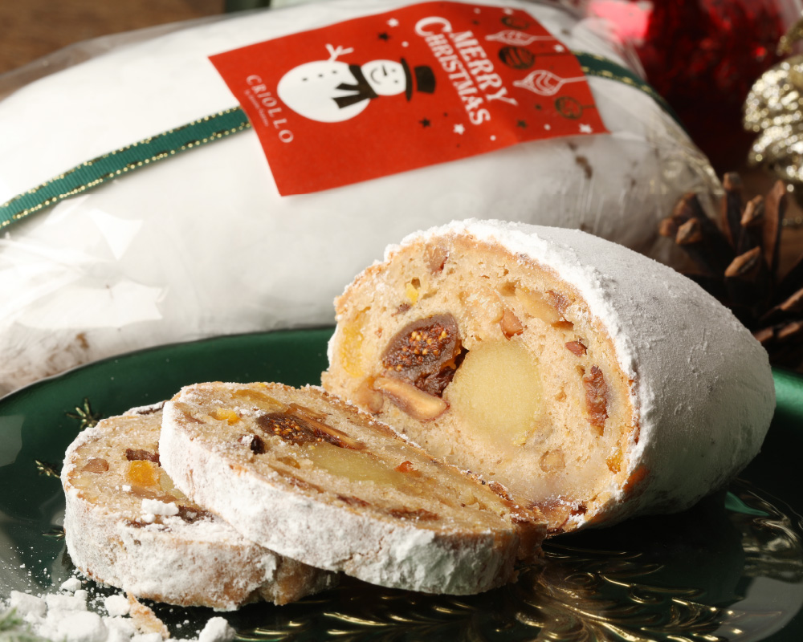

ショコラ・ノエル
送料込
今年のおススメ！
“チョコレートの達人”サントスシェフのチョコレートケーキ
今年のチョコレートケーキは4種類のチョコレートを使用し、口どけなめらかに。食感のアクセントには、ヴァニラが隠し味のクリーム、プラリネ、さらにはシェフこだわりのしっとり食感のチョコレートスポンジ。この2枚のチョコレートスポンジは、ココアを一切使わず、上質なチョコレートのみを使用しています。濃厚でリッチな味わいと、しっとりとした口どけが特徴です。

ルージュ・ノエル
送料込
配送可能なショートケーキ？！
定番のショートケーキは店頭のみでの販売ですが、オンラインショップでもショートケーキのようなケーキを楽しんでほしい！ということで赤い果実をたっぷり使用したケーキが新登場。苺とラズベリーをホワイトチョコレートに合わせました。ベリーの酸味とヴァニラのホワイトチョコレートムースが調和して、優しい味わいに。さらに、一番下にはアーモンドがたっぷりのスポンジが敷いてあり、食べ応えもあるけれど重たくなく、さっぱりと食べられます。見た目も華やかでお子様から大人の方までお楽しみいただけます。

ショコラ・ピスターシュ・ノエル
送料込
オンラインショップ限定！この時期だけ
ピスタチオとチョコレートのケーキ。ナッツの女王といわれる「ピスタチオ」は、とても繊細で味をしっかり出すのが難しいのですが、そこはサントスシェフの絶妙なバランスで、ピスタチオの味をしっかりと感じられるように調整しています。まろやかなピスタチオのコクの中には、グリオット(さくらんぼ)の華やかな酸味、そして濃厚なチョコレートが、贅沢なハーモニーを奏でます。ピスタチオ好きの方はもちろん、チョコレートが好きな方にもぜひご賞味いただきたい逸品です。

スリム・フレーズ・ノエル
送料込
“糖質制限ケーキ”に新作が登場！
甘味料を使用し、糖質をカットしています。ムースには、甘味料だけでなく”きび砂糖”も使用しているので、糖質制限スイーツ特有の甘味料感がなく、サントスシェフお得意の多彩な食感と素材の風味を楽しめるケーキです。糖質制限ケーキはフルーツを使うのが難しいのですが、こちらのケーキは、比較的糖質の低い苺を使用しています。ムースやクリームのなめらかさ、甘酸っぱい苺のコンポート、スポンジのしっとり感をぜひともご堪能ください。

シュトーレン・フレ
送料込
「今年も食べたい！」というお声にお応えして、復活！！
昨年大好評だった、まるで生ケーキ版シュトーレンを食べているかのようなケーキが今年は長方形のケーキになって復活しました！！気になるお味の方はドライフルーツとスパイスがふんだんに使われたシュトーレンを、生ケーキにアレンジしたケーキです。スパイシーだけど程よく優しい味わいのチャイを使ったクリームと杏仁風味のコクのあるホワイトチョコレートムースが絡み合います。他では味わえないケーキをぜひ。


シュトーレン
送料別
毎年、売り切れ必至のシュトーレン！
ドイツ発祥の、クリスマスを祝うお菓子「シュトーレン」。中にはドライフルーツやナッツがぎっしりと入っています。シェフが特にこだわったのは、なんといってもしっとりした食感♪ 毎年改良を重ねて、進化し続けています。シェフのシュトーレンは、甘さ控えめ。フルーツやナッツが熟成された自然な甘さが特徴です。薄くスライスして、コーヒーや紅茶と一緒に合わせても◎。